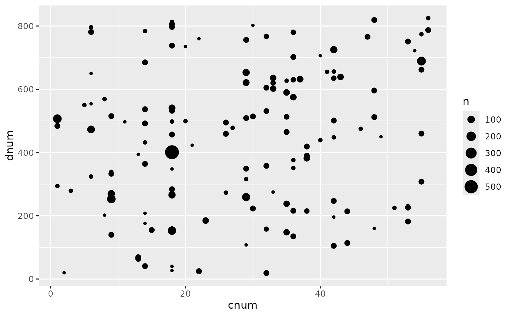
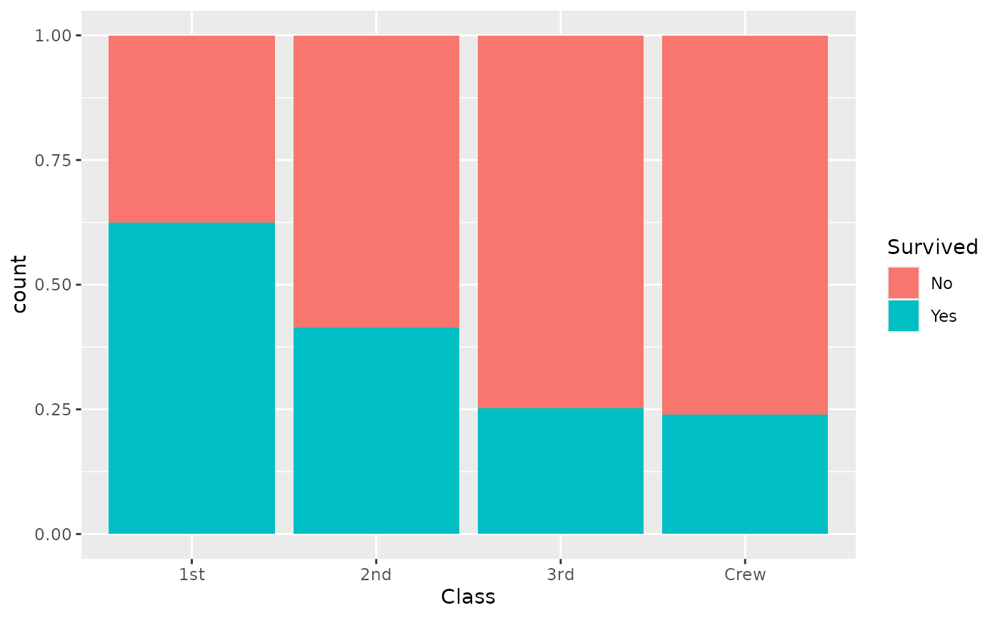

A function to facilitate ggplot2 graphs using a survey object.
It will initiate a ggplot and map survey weights to the
corresponding aesthetic.
Arguments
- design
A survey design object, usually created with
survey::svydesign()- mapping
Default list of aesthetic mappings to use for plot, to be created with
ggplot2::aes().- ...
Other arguments passed on to methods. Not currently used.
Details
Graphs will be correct as long as only weights are required
to compute the graph. However, statistic or geometry requiring
correct variance computation (like ggplot2::geom_smooth()) will
be statistically incorrect.
Examples
data(api, package = "survey")
dstrat <- survey::svydesign(
id = ~1, strata = ~stype,
weights = ~pw, data = apistrat,
fpc = ~fpc
)
ggsurvey(dstrat) +
ggplot2::aes(x = cnum, y = dnum) +
ggplot2::geom_count()

d <- as.data.frame(Titanic)
dw <- survey::svydesign(ids = ~1, weights = ~Freq, data = d)
ggsurvey(dw) +
ggplot2::aes(x = Class, fill = Survived) +
ggplot2::geom_bar(position = "fill")
